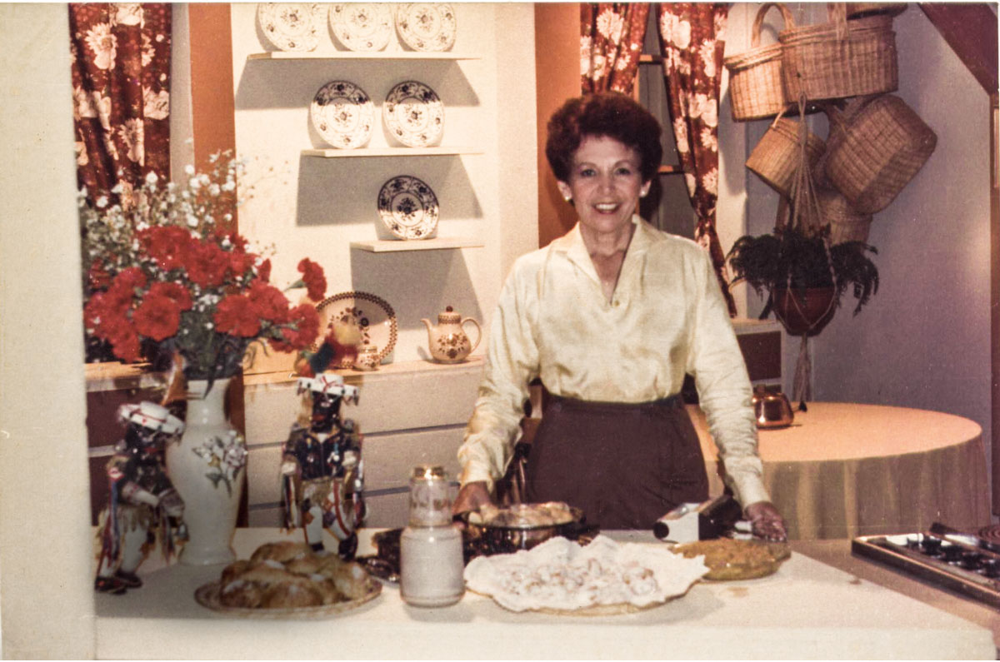

María Teresa Carlota Ocampo Oliart nació el 13 de octubre de 1931 en la hacienda de la Granja Escuela K’ayra, al sureste de la ciudad del Cuzco, en la provincia homónima. Cuando tenía 4 años de edad, sus padres, Carlota y Alcides, migraron a Lima, capital del país, instalándose en el centro de la ciudad. Ocampo estudió su educación básica en el Colegio Sagrado Corazón Sophianum. Tras vivir en el centro de la capital durante 15 años, la familia se trasladó al distrito de Miraflores. En la nueva residencia, Carlota Oliart empezó a dar clases de cocina casera dos veces por semana a las vecinas del barrio. En esa actividad, Teresa hacía las veces de ayudante.Carlota había aprendido a cocinar a través de su madre, y ambas a su vez estudiaron gastronomía en Europa.De hecho, las recetas acumuladas por Teresa Ocampo se remontan a su tatarabuela, María Mercedes Picoaga (1798-1859). Realizó estudios profesionales en Le Cordon Bleu de París, por lo que en 1952 pudo dedicarse a ser profesora de cocina en el centro de educación femenina Instituto de Ciencias Domésticas Bien del Hogar.En la escuela culinaria se inscribió junto a su madre en los cursos de cocina y repostería.
